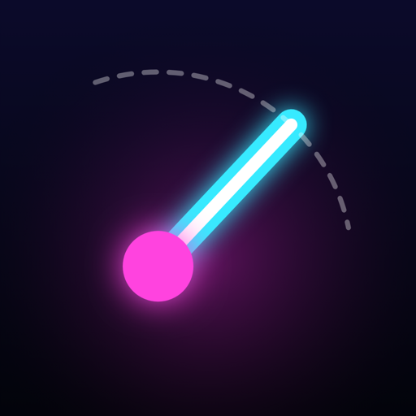

PIVOT
Bir dokunuş, bir dönüş · One tap, one turn · Nouselia Digital LabsGizlilik / Privacy Şartlar / Terms Veri silme / Data deletion
Destek · Support
E-posta / e-mail: nouselia@outlook.com — yanıt süresi 3 iş günü / we answer within 3 business days. Mesajına Ayarlar → Gizlilik'teki oyuncu numaranı ekle. / Please include your player number from Settings → Privacy.
Sık sorulanlar · FAQ
Kaydım kayboldu / I lost my progress.
Hesabını bağladıysan Arkadaşlar → "Hesabımla kaydımı getir". Bağlamadıysan Ayarlar → Kayıt kodu. / If you linked an account: Friends → "Fetch my save with my account". Otherwise Settings → Save code.
Yeni telefona geçiyorum / Moving to a new phone.
Eski telefonda Arkadaşlar → hesabını bağla (Android: Google ile Giriş, iOS: Apple ile Giriş). Yeni telefonda aynı hesapla "Hesabımla kaydımı getir". / On the old phone: Friends → link your account (Android: Google Sign-In, iOS: Sign in with Apple). On the new phone use "Fetch my save with my account" with the same account.
Satın almalarımı geri yüklemek istiyorum / Restore my purchases.
Aynı mağaza hesabıyla (Google Play / Apple) oyunu açınca satın almaların kendiliğinden geri yüklenir. Elle geri yüklemek için: Mağaza → Premium (en altta) ya da Ayarlar → Satın alımlar → "Satın alımları geri yükle". Oyun parası paketleri tüketildiği için geri gelmez. Olmazsa makbuz numarasıyla yaz. / Purchases are restored automatically when you open the game with the same store account (Google Play / Apple). To restore manually: Shop → Premium (at the bottom) or Settings → Purchases → "Restore purchases". Coin packs are consumed and do not come back. If it still does not work, write to us with the receipt number.
Arkadaşımı nasıl eklerim? / How do I add a friend?
Arkadaşlar → arkadaşının 6 karakterli kodunu yaz → EKLE. Ona bir istek gider; Arkadaşlar ekranının üstündeki "İstekler" bölümünden kabul ederse ikiniz de birbirinizin listesine eklenirsiniz ve sonsuz rekorlarınızla günlük skorlarınızı karşılaştırırsınız. Kabul edilmeyen istekler 14 gün sonra silinir; gönderdiğin isteği "Geri al" ile geri çekebilirsin. Sohbet yoktur. / Friends → enter your friend's 6-character code → ADD. They get a request; if they accept it under "Requests" at the top of the Friends screen, you are both added to each other's list and compare endless records and daily scores. Requests that are not accepted are deleted after 14 days; you can withdraw a request with "Withdraw". There is no chat.
Uygunsuz bir takma ad gördüm / I saw an offensive nickname.
Sıralamada, arkadaş listesinde ya da gelen arkadaşlık isteğinde adın yanındaki ⚑ işaretine dokun → "Bildir". Bildirimleri biz inceleriz. / Tap the ⚑ next to the name on the leaderboard, in the friends list or on an incoming friend request → "Report". We review every report.
Bir oyuncuyu nasıl engellerim? / How do I block or unblock a player?
Adın yanındaki ⚑ işaretine dokun → "Engelle". Engellediğin oyuncuyla arkadaşlığın ve iki yöndeki bekleyen istekler silinir, yeni istekleri sana ulaşmaz ve sıralamalarında görünmez. Engeli kaldırmak için Ayarlar → Engellenen oyuncular (en çok 200 oyuncu). / Tap the ⚑ next to the name → "Block". Your friendship and pending requests in both directions are removed, new requests from that player no longer reach you, and the player is hidden from your leaderboards. To unblock: Settings → Blocked players (up to 200 players).
Uygunsuz bir reklam gördüm / I saw an inappropriate ad.
Ayarlar → Gizlilik → "Son reklamı bildir" → nedeni seç. Reklamın biçimi ve birim kimliği nedeninle birlikte bize gelir; reklamı reklam ağına bildiririz. Reklamlar en fazla "PG / Parental Guidance" içerik derecesiyle istenir. / Settings → Privacy → "Report the last ad" → choose a reason. The ad format and ad unit id reach us with your reason, and we report the ad to the ad network. Ads are requested with a maximum content rating of "PG / Parental Guidance".
VIP aboneliğimi nasıl yönetir ya da iptal ederim? / How do I manage or cancel my VIP subscription?
Ayarlar → Satın alımlar → "Aboneliği yönet" ya da doğrudan mağaza hesabın: Android → Google Play → Ödemeler ve abonelikler → Abonelikler; iOS → Ayarlar → adın → Abonelikler. İptal, ödenmiş dönemin sonunda geçerli olur; oyunu ya da verilerini silmek aboneliği iptal etmez. / Settings → Purchases → "Manage subscription", or directly in your store account: Android → Google Play → Payments & subscriptions → Subscriptions; iOS → Settings → your name → Subscriptions. Cancellation takes effect at the end of the paid period; deleting the game or your data does not cancel the subscription.
Haftalık ödül nasıl verilir? / How do weekly rewards work?
Her haftanın sonunda sıralama dilimine göre oyun parası verilir; gerçekçi görünmeyen skorlar ve yasaklı hesaplar sayılmaz. Ödüllerin nakit değeri yoktur. / At the end of each week coins are granted by rank tier; implausible scores and banned accounts are excluded. Rewards have no cash value.
Reklam gizlilik tercihimi değiştirmek istiyorum / Change my ad privacy choices.
Ayarlar → Gizlilik. Ayrıca cihaz ayarlarından: Android → Ayarlar → Google → Reklamlar; iOS → Ayarlar → Gizlilik ve Güvenlik → İzleme. / Settings → Privacy. Also in device settings: Android → Settings → Google → Ads; iOS → Settings → Privacy & Security → Tracking.
Verilerimi silmek istiyorum / Delete my data.Ayarlar → Verileri sıfırla (çevrim içiyken). Oyun olmadan:
veri silme sayfası. / Settings → Reset data (while online). Without the game:
data deletion page.
© Nouselia Digital Labs